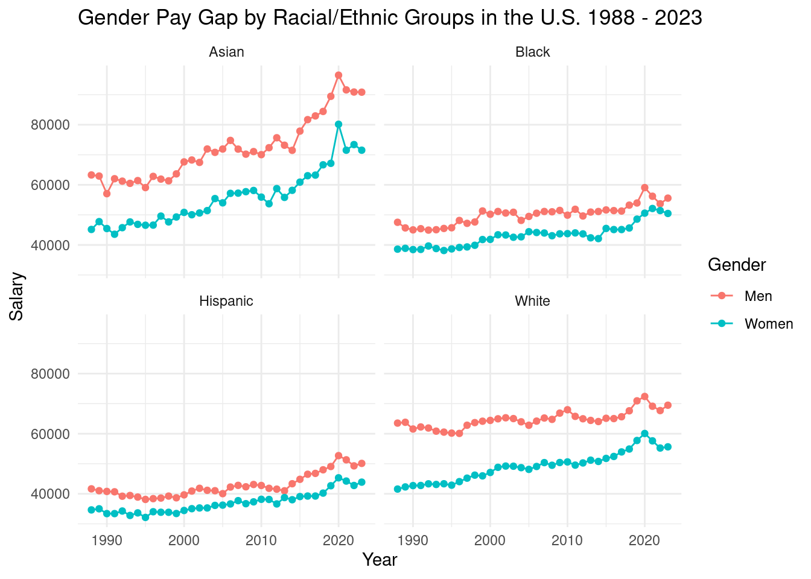
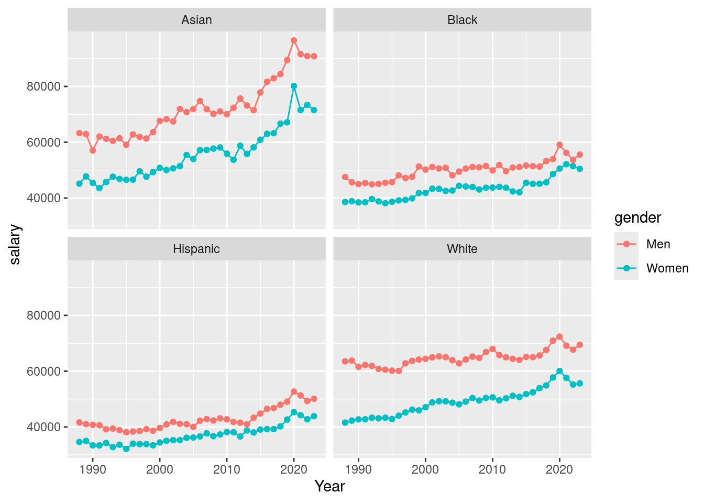
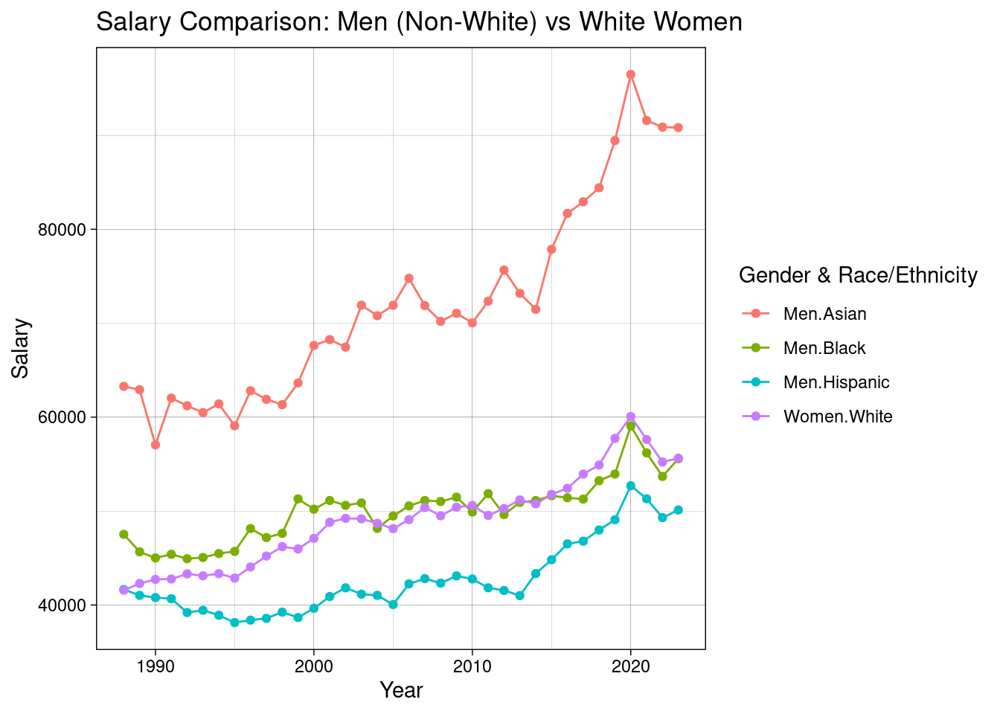
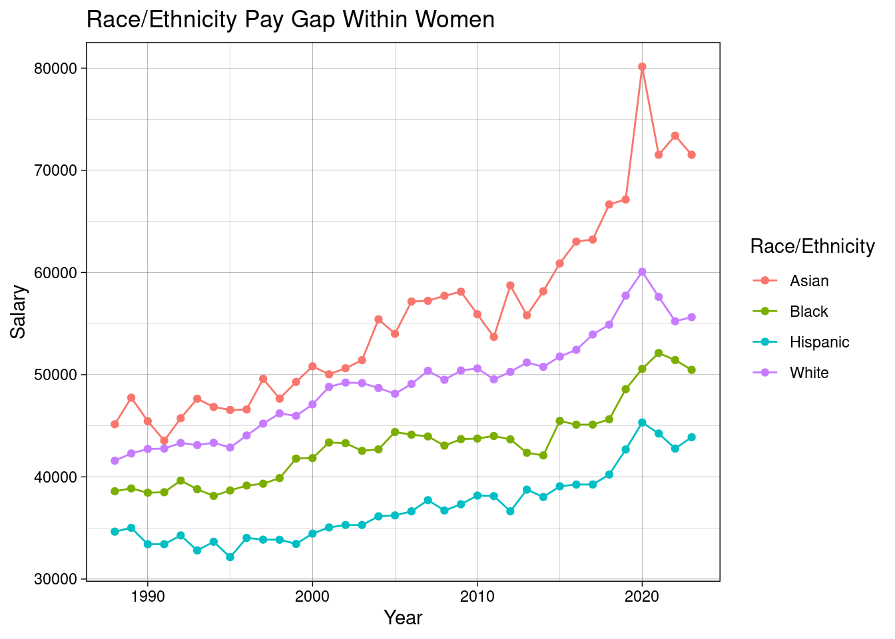
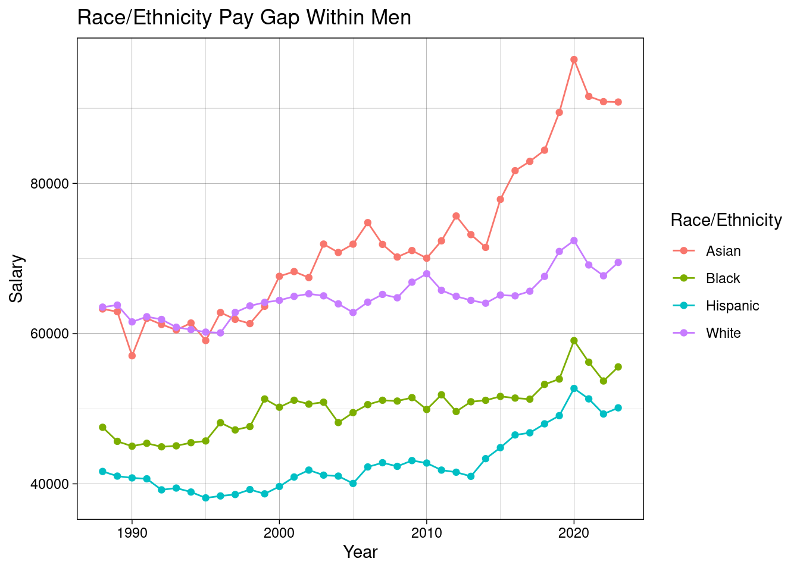
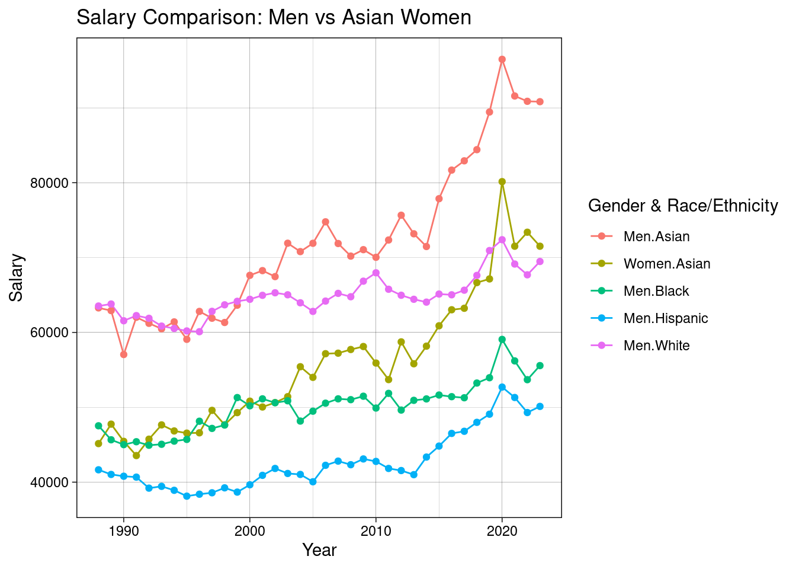

library(tidyverse)── Attaching core tidyverse packages ──────────────────────── tidyverse 2.0.0 ──
✔ dplyr 1.1.4 ✔ readr 2.1.5
✔ forcats 1.0.0 ✔ stringr 1.5.1
✔ ggplot2 3.5.2 ✔ tibble 3.3.0
✔ lubridate 1.9.4 ✔ tidyr 1.3.1
✔ purrr 1.1.0
── Conflicts ────────────────────────────────────────── tidyverse_conflicts() ──
✖ dplyr::filter() masks stats::filter()
✖ dplyr::lag() masks stats::lag()
ℹ Use the conflicted package (<http://conflicted.r-lib.org/>) to force all conflicts to become errorssalarydata <- read.csv("../../salary_bras.csv")
#To clean and transform the data for better use
salarydata <- gather(
salarydata,
group,
salary,
Asian.Men:White.Women,
factor_key = TRUE
)
salarydata$ethnicity <- str_split_i(
salarydata$group,
"\\.",
1
)
salarydata$gender <- str_split_i(
salarydata$group,
"\\.",
2
)
#To filter a data set without the total values
salary_data_filter <- salarydata |> filter(ethnicity != "Total")
??salarydataNo vignettes or demos or help files found with alias or concept or
title matching 'salarydata' using fuzzy matching.#To create a graph that shows how are women and man pay across racial groups
ggplot(salary_data_filter, mapping = aes (x = Year, y = salary, group = gender,
color = gender)) +
geom_line()+
geom_point()+
facet_wrap(~ethnicity) +
labs(title = "Gender Pay Gap by Racial/Ethnic Groups in the U.S. 1988 - 2023",
y = "Salary",
x = "Year", color = "Gender")+
theme_minimal()
ggplot(salary_data_filter, mapping = aes( x= Year, y = salary,
color=gender))+
geom_line()+
geom_point()+
facet_wrap(~ethnicity)
# To create a filter of Non White Males vs White women
salarydata_whitewomen <- salary_data_filter |> filter((
gender == "Men" & ethnicity != "White") | (
gender == "Women" & ethnicity == "White"))
# The creation of the plot of the comparison
ggplot(salarydata_whitewomen, aes(
x=Year, y=salary, color = interaction(gender, ethnicity)))+
geom_line()+
geom_point()+
labs(title = "Salary Comparison: Men (Non-White) vs White Women", x = "Year",
y = "Salary", color = "Gender & Race/Ethnicity")+
theme_linedraw()
#To create a filter of Women only
salarydata_women <- salary_data_filter |> filter(gender == "Women")
salarydata_women Year group salary ethnicity gender
1 1988 Asian.Women 45150 Asian Women
2 1989 Asian.Women 47750 Asian Women
3 1990 Asian.Women 45450 Asian Women
4 1991 Asian.Women 43550 Asian Women
5 1992 Asian.Women 45740 Asian Women
6 1993 Asian.Women 47650 Asian Women
7 1994 Asian.Women 46840 Asian Women
8 1995 Asian.Women 46550 Asian Women
9 1996 Asian.Women 46590 Asian Women
10 1997 Asian.Women 49590 Asian Women
11 1998 Asian.Women 47660 Asian Women
12 1999 Asian.Women 49290 Asian Women
13 2000 Asian.Women 50820 Asian Women
14 2001 Asian.Women 50040 Asian Women
15 2002 Asian.Women 50630 Asian Women
16 2003 Asian.Women 51420 Asian Women
17 2004 Asian.Women 55420 Asian Women
18 2005 Asian.Women 54000 Asian Women
19 2006 Asian.Women 57160 Asian Women
20 2007 Asian.Women 57230 Asian Women
21 2008 Asian.Women 57720 Asian Women
22 2009 Asian.Women 58120 Asian Women
23 2010 Asian.Women 55910 Asian Women
24 2011 Asian.Women 53700 Asian Women
25 2012 Asian.Women 58740 Asian Women
26 2013 Asian.Women 55815 Asian Women
27 2014 Asian.Women 58170 Asian Women
28 2015 Asian.Women 60890 Asian Women
29 2016 Asian.Women 63030 Asian Women
30 2017 Asian.Women 63230 Asian Women
31 2018 Asian.Women 66660 Asian Women
32 2019 Asian.Women 67150 Asian Women
33 2020 Asian.Women 80150 Asian Women
34 2021 Asian.Women 71520 Asian Women
35 2022 Asian.Women 73390 Asian Women
36 2023 Asian.Women 71520 Asian Women
37 1988 Black.Women 38590 Black Women
38 1989 Black.Women 38870 Black Women
39 1990 Black.Women 38450 Black Women
40 1991 Black.Women 38500 Black Women
41 1992 Black.Women 39640 Black Women
42 1993 Black.Women 38790 Black Women
43 1994 Black.Women 38140 Black Women
44 1995 Black.Women 38670 Black Women
45 1996 Black.Women 39150 Black Women
46 1997 Black.Women 39330 Black Women
47 1998 Black.Women 39880 Black Women
48 1999 Black.Women 41790 Black Women
49 2000 Black.Women 41840 Black Women
50 2001 Black.Women 43370 Black Women
51 2002 Black.Women 43300 Black Women
52 2003 Black.Women 42550 Black Women
53 2004 Black.Women 42690 Black Women
54 2005 Black.Women 44390 Black Women
55 2006 Black.Women 44130 Black Women
56 2007 Black.Women 43960 Black Women
57 2008 Black.Women 43060 Black Women
58 2009 Black.Women 43690 Black Women
59 2010 Black.Women 43750 Black Women
60 2011 Black.Women 44000 Black Women
61 2012 Black.Women 43670 Black Women
62 2013 Black.Women 42360 Black Women
63 2014 Black.Women 42100 Black Women
64 2015 Black.Women 45480 Black Women
65 2016 Black.Women 45110 Black Women
66 2017 Black.Women 45115 Black Women
67 2018 Black.Women 45630 Black Women
68 2019 Black.Women 48580 Black Women
69 2020 Black.Women 50570 Black Women
70 2021 Black.Women 52120 Black Women
71 2022 Black.Women 51430 Black Women
72 2023 Black.Women 50470 Black Women
73 1988 Hispanic.Women 34640 Hispanic Women
74 1989 Hispanic.Women 35010 Hispanic Women
75 1990 Hispanic.Women 33410 Hispanic Women
76 1991 Hispanic.Women 33410 Hispanic Women
77 1992 Hispanic.Women 34270 Hispanic Women
78 1993 Hispanic.Women 32800 Hispanic Women
79 1994 Hispanic.Women 33650 Hispanic Women
80 1995 Hispanic.Women 32140 Hispanic Women
81 1996 Hispanic.Women 34030 Hispanic Women
82 1997 Hispanic.Women 33860 Hispanic Women
83 1998 Hispanic.Women 33850 Hispanic Women
84 1999 Hispanic.Women 33440 Hispanic Women
85 2000 Hispanic.Women 34450 Hispanic Women
86 2001 Hispanic.Women 35050 Hispanic Women
87 2002 Hispanic.Women 35290 Hispanic Women
88 2003 Hispanic.Women 35290 Hispanic Women
89 2004 Hispanic.Women 36140 Hispanic Women
90 2005 Hispanic.Women 36230 Hispanic Women
91 2006 Hispanic.Women 36630 Hispanic Women
92 2007 Hispanic.Women 37720 Hispanic Women
93 2008 Hispanic.Women 36710 Hispanic Women
94 2009 Hispanic.Women 37320 Hispanic Women
95 2010 Hispanic.Women 38170 Hispanic Women
96 2011 Hispanic.Women 38120 Hispanic Women
97 2012 Hispanic.Women 36630 Hispanic Women
98 2013 Hispanic.Women 38750 Hispanic Women
99 2014 Hispanic.Women 38030 Hispanic Women
100 2015 Hispanic.Women 39080 Hispanic Women
101 2016 Hispanic.Women 39250 Hispanic Women
102 2017 Hispanic.Women 39255 Hispanic Women
103 2018 Hispanic.Women 40230 Hispanic Women
104 2019 Hispanic.Women 42680 Hispanic Women
105 2020 Hispanic.Women 45320 Hispanic Women
106 2021 Hispanic.Women 44240 Hispanic Women
107 2022 Hispanic.Women 42770 Hispanic Women
108 2023 Hispanic.Women 43880 Hispanic Women
109 1988 White.Women 41580 White Women
110 1989 White.Women 42290 White Women
111 1990 White.Women 42730 White Women
112 1991 White.Women 42770 White Women
113 1992 White.Women 43320 White Women
114 1993 White.Women 43110 White Women
115 1994 White.Women 43340 White Women
116 1995 White.Women 42870 White Women
117 1996 White.Women 44050 White Women
118 1997 White.Women 45210 White Women
119 1998 White.Women 46210 White Women
120 1999 White.Women 45970 White Women
121 2000 White.Women 47100 White Women
122 2001 White.Women 48810 White Women
123 2002 White.Women 49230 White Women
124 2003 White.Women 49180 White Women
125 2004 White.Women 48700 White Women
126 2005 White.Women 48130 White Women
127 2006 White.Women 49090 White Women
128 2007 White.Women 50380 White Women
129 2008 White.Women 49500 White Women
130 2009 White.Women 50410 White Women
131 2010 White.Women 50610 White Women
132 2011 White.Women 49540 White Women
133 2012 White.Women 50270 White Women
134 2013 White.Women 51195 White Women
135 2014 White.Women 50770 White Women
136 2015 White.Women 51780 White Women
137 2016 White.Women 52430 White Women
138 2017 White.Women 53935 White Women
139 2018 White.Women 54900 White Women
140 2019 White.Women 57740 White Women
141 2020 White.Women 60070 White Women
142 2021 White.Women 57620 White Women
143 2022 White.Women 55230 White Women
144 2023 White.Women 55630 White Women#To create a filter of Men only
salarydata_men <- salary_data_filter |> filter(gender == "Men")
salarydata_men Year group salary ethnicity gender
1 1988 Asian.Men 63280 Asian Men
2 1989 Asian.Men 62920 Asian Men
3 1990 Asian.Men 57050 Asian Men
4 1991 Asian.Men 62030 Asian Men
5 1992 Asian.Men 61220 Asian Men
6 1993 Asian.Men 60490 Asian Men
7 1994 Asian.Men 61410 Asian Men
8 1995 Asian.Men 59080 Asian Men
9 1996 Asian.Men 62810 Asian Men
10 1997 Asian.Men 61900 Asian Men
11 1998 Asian.Men 61330 Asian Men
12 1999 Asian.Men 63640 Asian Men
13 2000 Asian.Men 67630 Asian Men
14 2001 Asian.Men 68260 Asian Men
15 2002 Asian.Men 67460 Asian Men
16 2003 Asian.Men 71920 Asian Men
17 2004 Asian.Men 70800 Asian Men
18 2005 Asian.Men 71910 Asian Men
19 2006 Asian.Men 74780 Asian Men
20 2007 Asian.Men 71880 Asian Men
21 2008 Asian.Men 70200 Asian Men
22 2009 Asian.Men 71060 Asian Men
23 2010 Asian.Men 70040 Asian Men
24 2011 Asian.Men 72350 Asian Men
25 2012 Asian.Men 75660 Asian Men
26 2013 Asian.Men 73180 Asian Men
27 2014 Asian.Men 71480 Asian Men
28 2015 Asian.Men 77870 Asian Men
29 2016 Asian.Men 81690 Asian Men
30 2017 Asian.Men 82930 Asian Men
31 2018 Asian.Men 84420 Asian Men
32 2019 Asian.Men 89450 Asian Men
33 2020 Asian.Men 96490 Asian Men
34 2021 Asian.Men 91590 Asian Men
35 2022 Asian.Men 90880 Asian Men
36 2023 Asian.Men 90830 Asian Men
37 1988 Black.Men 47530 Black Men
38 1989 Black.Men 45660 Black Men
39 1990 Black.Men 45010 Black Men
40 1991 Black.Men 45400 Black Men
41 1992 Black.Men 44930 Black Men
42 1993 Black.Men 45060 Black Men
43 1994 Black.Men 45480 Black Men
44 1995 Black.Men 45710 Black Men
45 1996 Black.Men 48140 Black Men
46 1997 Black.Men 47180 Black Men
47 1998 Black.Men 47630 Black Men
48 1999 Black.Men 51300 Black Men
49 2000 Black.Men 50200 Black Men
50 2001 Black.Men 51130 Black Men
51 2002 Black.Men 50610 Black Men
52 2003 Black.Men 50870 Black Men
53 2004 Black.Men 48160 Black Men
54 2005 Black.Men 49480 Black Men
55 2006 Black.Men 50550 Black Men
56 2007 Black.Men 51130 Black Men
57 2008 Black.Men 51020 Black Men
58 2009 Black.Men 51480 Black Men
59 2010 Black.Men 49900 Black Men
60 2011 Black.Men 51860 Black Men
61 2012 Black.Men 49630 Black Men
62 2013 Black.Men 50930 Black Men
63 2014 Black.Men 51120 Black Men
64 2015 Black.Men 51640 Black Men
65 2016 Black.Men 51420 Black Men
66 2017 Black.Men 51275 Black Men
67 2018 Black.Men 53240 Black Men
68 2019 Black.Men 53950 Black Men
69 2020 Black.Men 59070 Black Men
70 2021 Black.Men 56200 Black Men
71 2022 Black.Men 53690 Black Men
72 2023 Black.Men 55570 Black Men
73 1988 Hispanic.Men 41650 Hispanic Men
74 1989 Hispanic.Men 41030 Hispanic Men
75 1990 Hispanic.Men 40790 Hispanic Men
76 1991 Hispanic.Men 40670 Hispanic Men
77 1992 Hispanic.Men 39200 Hispanic Men
78 1993 Hispanic.Men 39440 Hispanic Men
79 1994 Hispanic.Men 38910 Hispanic Men
80 1995 Hispanic.Men 38130 Hispanic Men
81 1996 Hispanic.Men 38390 Hispanic Men
82 1997 Hispanic.Men 38580 Hispanic Men
83 1998 Hispanic.Men 39240 Hispanic Men
84 1999 Hispanic.Men 38670 Hispanic Men
85 2000 Hispanic.Men 39650 Hispanic Men
86 2001 Hispanic.Men 40910 Hispanic Men
87 2002 Hispanic.Men 41830 Hispanic Men
88 2003 Hispanic.Men 41160 Hispanic Men
89 2004 Hispanic.Men 41030 Hispanic Men
90 2005 Hispanic.Men 40050 Hispanic Men
91 2006 Hispanic.Men 42250 Hispanic Men
92 2007 Hispanic.Men 42810 Hispanic Men
93 2008 Hispanic.Men 42330 Hispanic Men
94 2009 Hispanic.Men 43100 Hispanic Men
95 2010 Hispanic.Men 42770 Hispanic Men
96 2011 Hispanic.Men 41830 Hispanic Men
97 2012 Hispanic.Men 41550 Hispanic Men
98 2013 Hispanic.Men 41000 Hispanic Men
99 2014 Hispanic.Men 43350 Hispanic Men
100 2015 Hispanic.Men 44820 Hispanic Men
101 2016 Hispanic.Men 46510 Hispanic Men
102 2017 Hispanic.Men 46795 Hispanic Men
103 2018 Hispanic.Men 47990 Hispanic Men
104 2019 Hispanic.Men 49080 Hispanic Men
105 2020 Hispanic.Men 52700 Hispanic Men
106 2021 Hispanic.Men 51310 Hispanic Men
107 2022 Hispanic.Men 49300 Hispanic Men
108 2023 Hispanic.Men 50120 Hispanic Men
109 1988 White.Men 63530 White Men
110 1989 White.Men 63800 White Men
111 1990 White.Men 61560 White Men
112 1991 White.Men 62250 White Men
113 1992 White.Men 61890 White Men
114 1993 White.Men 60850 White Men
115 1994 White.Men 60530 White Men
116 1995 White.Men 60200 White Men
117 1996 White.Men 60100 White Men
118 1997 White.Men 62820 White Men
119 1998 White.Men 63690 White Men
120 1999 White.Men 64160 White Men
121 2000 White.Men 64430 White Men
122 2001 White.Men 64960 White Men
123 2002 White.Men 65300 White Men
124 2003 White.Men 65030 White Men
125 2004 White.Men 63960 White Men
126 2005 White.Men 62810 White Men
127 2006 White.Men 64190 White Men
128 2007 White.Men 65220 White Men
129 2008 White.Men 64770 White Men
130 2009 White.Men 66850 White Men
131 2010 White.Men 67970 White Men
132 2011 White.Men 65770 White Men
133 2012 White.Men 64970 White Men
134 2013 White.Men 64430 White Men
135 2014 White.Men 64050 White Men
136 2015 White.Men 65130 White Men
137 2016 White.Men 65030 White Men
138 2017 White.Men 65645 White Men
139 2018 White.Men 67620 White Men
140 2019 White.Men 70940 White Men
141 2020 White.Men 72390 White Men
142 2021 White.Men 69140 White Men
143 2022 White.Men 67700 White Men
144 2023 White.Men 69480 White Men#To create a plot for women pay gap across groups
ggplot(salarydata_women, aes(
x = Year, y = salary, color = ethnicity))+
geom_line()+
geom_point()+
labs(title ="Race/Ethnicity Pay Gap Within Women", x = "Year", y = "Salary",
color = "Race/Ethnicity")+
theme_linedraw()
#To make a graph to show the pay gap within men
ggplot(salarydata_men, aes(
x = Year, y = salary, color = ethnicity))+
geom_line()+
geom_point()+
labs(title ="Race/Ethnicity Pay Gap Within Men", x = "Year", y = "Salary",
color = "Race/Ethnicity")+
theme_linedraw()
# To create a filter of Men vs Asian women
salarydata_asianwomen <- salary_data_filter |> filter((
gender == "Men") | (
gender == "Women" & ethnicity == "Asian"))
# The creation of the plot of the comparison
ggplot(salarydata_asianwomen, aes(
x=Year, y=salary, color = interaction(gender, ethnicity)))+
geom_line()+
geom_point()+
labs(title = "Salary Comparison: Men vs Asian Women", x = "Year",
y = "Salary", color = "Gender & Race/Ethnicity")+
theme_linedraw()